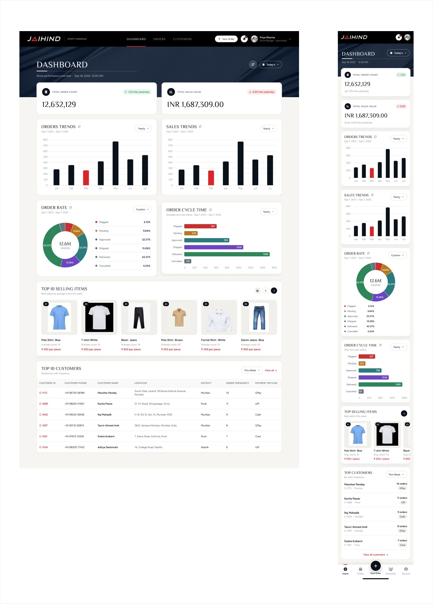
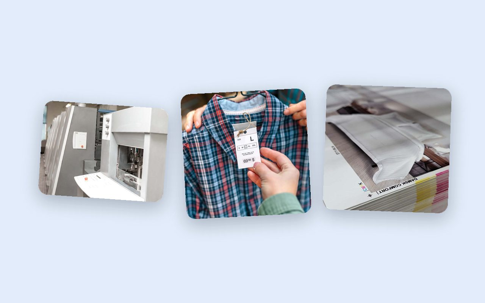
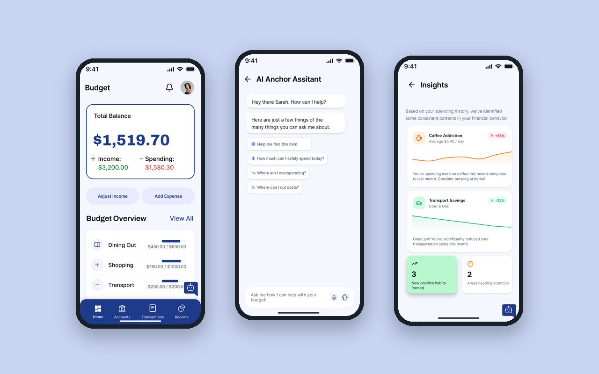
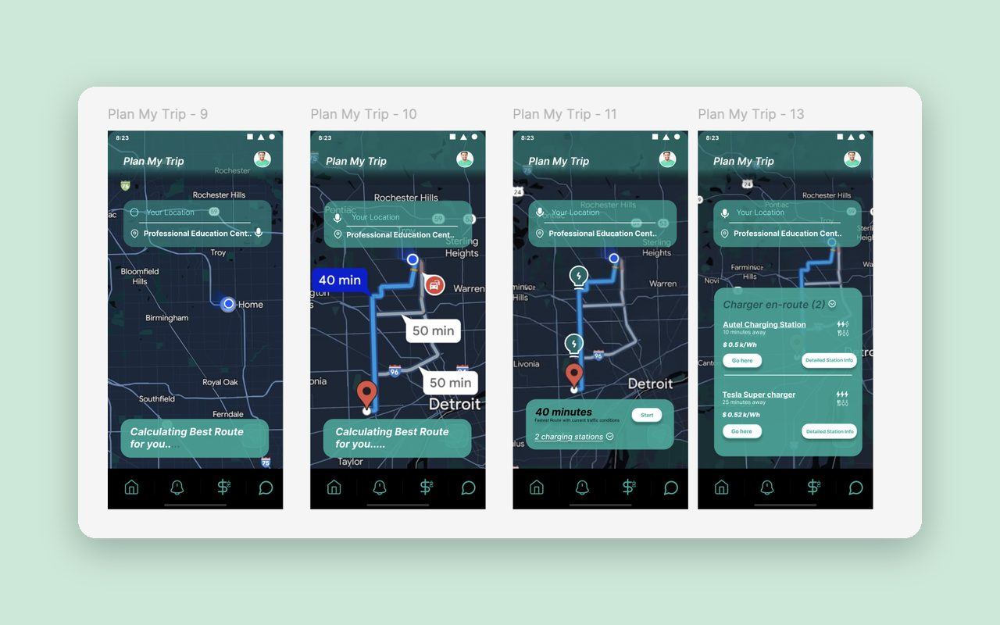
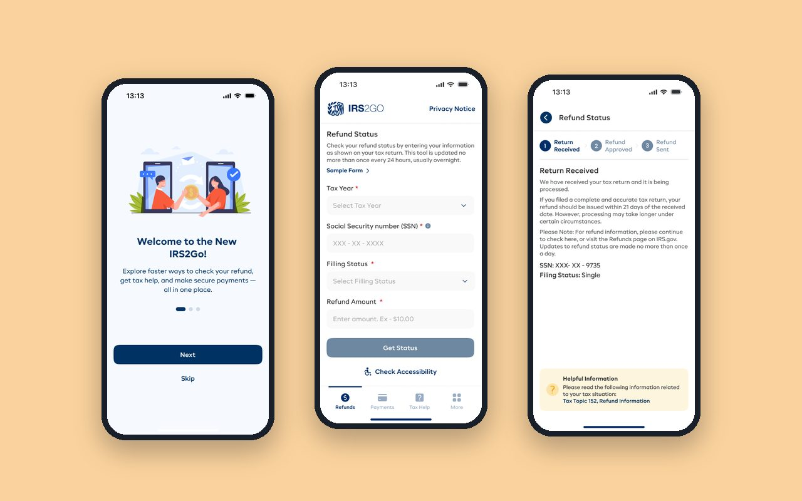
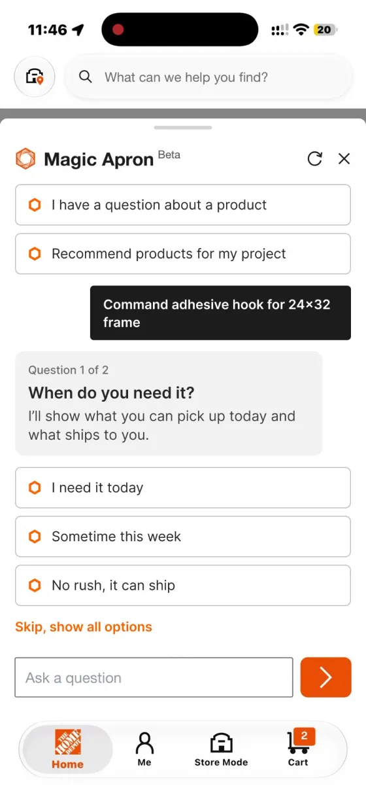

I turn messy data into workflows people trust.
Hi! I’m Siddhi Manche
I started as a front-end developer, building catalog pages from designers' files. At JaiHind-India I moved into design: our team interviewed about 200 store employees, and I redesigned how orders move from the counter to the supplier.
My M.S. in Human-Centered Design at UM-Dearborn added AI to my research. I use it to read thousands of reviews, transcripts and papers, then I check every finding myself before it shapes a design.
Experience
I design workflows from what people actually do.
-
2 new UX courses from 2 semesters of research
Found where a UX curriculum built before AI fell short of current practice, with 43 students and 50+ papers.
- Longitudinal research
- AI literature review
- Affinity mapping
-
Growing a design system while the product kept shipping
25+ components keeping 2 products consistent, and 28% more engagement on brand pages.
- Design system
- Research
- Agile

Cutting order errors 27% for a 10-store retailer
One order portal for about 200 employees, replacing phone calls, paper books and 5 systems.
- B2B workflow
- Field research
- Internal tool

Building a 50+ page B2B catalog from design files
Built every page from designers' handoff files and checked each against the design before release.
- Front-end
- B2B catalog
Projects
Research-led projects, with AI in the loop.

Designing an AI budgeting coach people trust
IRB-approved study with 24 participants. 6 of 8 testers fully trusted the AI's advice.
- AI
- Research
- Fintech

Finding what breaks EV charging, in 16,767 reviews
AI-assisted review analysis, then one app for every charging network, tested with 10 drivers.
- Data research
- AI analysis
- Mobile

Taking the IRS app's usability from 31 to 78
Rebuilt refund, payment and tax-help flows for a 2.8-star app where 45% quit mid-task.
- Gov tech
- Accessibility
- Research
More work
Side builds and concepts, on my own time.
- Building
Research Lens: AI answers that cite participants
An MCP server that answers research questions with participant-level citations.
- MCP
- TypeScript
- AI in research
- Concept

Magic Apron: fixing an AI shopping assistant
Fixing an AI shopping assistant after watching a first-time DIYer use it.
- AI assistant
- Concept
How I work
Go where the work happens
Store floors, phone calls, real screens. I watch the task before I redraw it.
Let AI do the heavy reading
Thousands of reviews, transcripts and papers, sorted into themes in hours.
Check every finding myself
Every AI theme goes back to the raw quotes before it becomes a decision.
Measure what the team feels
Orders a day, errors, task success. Numbers people already care about.
Tools I use
Research
- Dovetail
- Maze
- Google Colab
- Python
- UM-GPT
- Figma affinity boards
Design
- Figma
- Figma Make
- Prototyping
- Design systems
Build
- HTML, CSS, JavaScript
- TypeScript
- Git
- Claude Code
Team
- Jira
- Agile sprints
- WCAG 2.1 AA
About
I started as a front-end developer, building catalog pages from designers' files. At JaiHind-India I moved into design: our team interviewed about 200 store employees, and I redesigned how orders move from the counter to the supplier.
My M.S. in Human-Centered Design at UM-Dearborn added AI to my research. I use it to read thousands of reviews, transcripts and papers, then I check every finding myself before it shapes a design.
Education
2024 to 2026
M.S. Human-Centered Design and Engineering
University of Michigan-Dearborn
2020 to 2024
B.E. Electronics and Telecommunication
Vidyalankar Institute of Technology, University of Mumbai
Work experience
Sep 2025 to May 2026
Human-Centered Design Researcher at University of Michigan-Dearborn
Found where a UX curriculum built before AI fell short of current practice, with 43 students and 50+ papers.
May to Aug 2025
UX/UI Designer at FindMe
25+ components keeping 2 products consistent, and 28% more engagement on brand pages.
Feb 2023 to Jul 2024
Product UX Designer at JaiHind-India
One order portal for about 200 employees, replacing phone calls, paper books and 5 systems.
May 2022 to Jan 2023
Junior Front-End Developer at Omkar Labels
Built every page from designers' handoff files and checked each against the design before release.
“Siddhi designs with empathy. She took the time to understand our employees and how they work, and designed around them. She has a great understanding of users.”
“Siddhi brought a rare mix of curiosity and rigor to our team. She dug into the research, listened carefully to users, and turned messy problems into clear, thoughtful design decisions.”